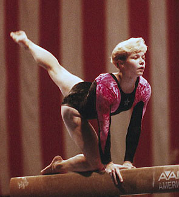

Amanda Borden (USA)
1996 Olympic Team Gold
Medalist
1994 World Championships Team Silver Medalist

Medal Total
Olympic Games: 1 Gold
World Championships: 1 Silver
Amanda was born on May 10, 1977, in Cincinnati. She trained at the Cincinnati Gymnastics Academy with coach Mary Lee Tracey. A 2004 graduate of Arizona State University, Borden runs her own gym, Gold Medal Gymnastics, in Tempe.
Competition Results
1990
Crystal Classic: 1st AA
Jr. American Classic: 3rd AA
Jr. JO Nationals: 4th AA
1991
American Classic: 12th AA
Jr. Buckeye Classic: 11th AA
Region Five Championships: 1st AA
1992
Jr. Buckeye Classic: 4th AA
Pacific Alliance Championships: 9th AA
Twisters Invitational: 3rd AA
US Championships: 5th AA, 4th B, 4th FX
US Classic: 6th AA
US Olympic Trials: 8th AA
1993
American Classic: 3rd AA
American Cup: 8th AA (prelims)
Buckeye Classic: 2nd AA
Chunichi Cup: 11th AA, 5th UB, 6th FX
Intl. Mixed Pairs: 6th Team
Tokyo Cup: 3rd UB, 4th FX
Twisters Invitational: 2nd AA, 1st UB
US Championships: 4th AA, 6th B, 6th FX
US Olympic Festival: 11th AA
USA-BLR-UKR Tri-Meet: 1st Team, 4th AA
1994
American Classic: 2nd AA
American Cup: 14th AA (prelims)
Intl. Mixed Pairs: 4th Team
US Championships: 3rd AA, 3rd UB, 3rd FX, 6th B
US Classic: 1st AA
USA-BLR-CHN Tri-Meet: 4th AA
World Championships (Brisbane): 8th UB, 29th FX (prelims)
World Championships (Dortmund): 2nd Team
1995
American Classic: 2nd AA
American Cup: 3rd AA
Pan American Games: 2nd AA, 1st B, 2nd FX
Reese's International: 6th AA
US Championships: 33rd AA
1996
Olympic Games: 1st Team, 97th AA (prelims)
US Classic: 2nd AA
US Championships: 4th AA
US Olympic Trials: 7th AA
1998
Reese's International: 2nd AA
This page was created on December
30, 2006 and was last updated on February 24, 2021.
© Gymn Forum